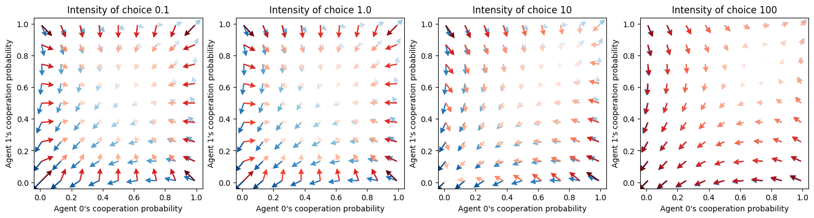

from pyCRLD.Agents.StrategySARSA import stratSARSA
from pyCRLD.Agents.StrategyActorCritic import stratAC
from pyCRLD.Environments.SocialDilemma import SocialDilemma
from pyCRLD.Utils import FlowPlot as fp
import numpy as np
import matplotlib.pyplot as pltStrategy SARSA
CRLD SARSA agents in strategy space
SARSA agents take into acount the five pieces of information of current State, current Action, Reward, next State and next Action.
Example
env = SocialDilemma(R=1.0, T=0.8, S=-0.5, P=0.0)Let’s compare the SARSA (in red) with the actor-critic learners (in blue). The difference is that the SARSA learners incorporate an explicit exploration term in their learning update, regulated by the choice_intensities. For low choice intensities, the SARSA learners tend to extreme exploration, i.e., toward the center of the strategy space. For high choice intensities, the SARSA map onto the actor-critic learners (see Figure below). For the actor-critic learners, the choice_intensities have no effect other than scaling the learning speed alongside the learning rates.
fig, ax = plt.subplots(1,4, figsize=(18,4))
faps = np.linspace(0.01 ,0.99, 9)
x = ([0], [0], [0])
y = ([1], [0], [0])
for i, ci in enumerate([0.1, 1.0, 10, 100]):
maeiAC = stratAC(env=env, learning_rates=0.1, discount_factors=0.9, choice_intensities=ci)
maeiSARSA = stratSARSA(env=env, learning_rates=0.1, discount_factors=0.9, choice_intensities=ci)
fp.plot_strategy_flow(maeiAC, x, y, flowarrow_points=faps, cmap="Blues", axes=[ax[i]])
fp.plot_strategy_flow(maeiSARSA, x, y, flowarrow_points=faps, cmap="Reds", axes=[ax[i]]);
ax[i].set_xlabel("Agent 0's cooperation probability")
ax[i].set_ylabel("Agent 1's cooperation probability")
ax[i].set_title("Intensity of choice {}".format(ci));
API
stratSARSA
stratSARSA (env, learning_rates:Union[float,Iterable], discount_factors:Union[float,Iterable], choice_intensities:Union[float,Iterable]=1.0, use_prefactor=False, opteinsum=True, **kwargs)
Class for CRLD-SARSA agents in strategy space.
| Type | Default | Details | |
|---|---|---|---|
| env | An environment object | ||
| learning_rates | Union | agents’ learning rates | |
| discount_factors | Union | agents’ discount factors | |
| choice_intensities | Union | 1.0 | agents’ choice intensities |
| use_prefactor | bool | False | use the 1-DiscountFactor prefactor |
| opteinsum | bool | True | optimize einsum functions |
| kwargs |
stratSARSA.RPEisa
stratSARSA.RPEisa (Xisa, norm=False)
Compute reward-prediction/temporal-difference error for strategy SARSA dynamics, given joint strategy Xisa.
| Type | Default | Details | |
|---|---|---|---|
| Xisa | Joint strategy | ||
| norm | bool | False | normalize error around actions? |
| Returns | ndarray | RP/TD error |
stratSARSA.NextQisa
stratSARSA.NextQisa (Xisa, Qisa=None, Risa=None, Vis=None, Tisas=None)
Compute strategy-average next state-action value for agent i, current state s and action a.
| Type | Default | Details | |
|---|---|---|---|
| Xisa | Joint strategy | ||
| Qisa | NoneType | None | Optional state-action values for speed-up |
| Risa | NoneType | None | Optional rewards for speed-up |
| Vis | NoneType | None | Optional state values for speed-up |
| Tisas | NoneType | None | Optional transition for speed-up |
| Returns | Array | Next values |
Note, that although stratSARSA.NextQisa is computed differently than stratAC.NextVisa, they give actually identical values.
ci = 100 * np.random.rand()
maeAC = stratAC(env=env, learning_rates=0.1, discount_factors=0.9, choice_intensities=ci)
maeSARSA = stratSARSA(env=env, learning_rates=0.1, discount_factors=0.9, choice_intensities=ci)
X = maeAC.random_softmax_strategy()
assert np.allclose(maeAC.NextVisa(X) - maeSARSA.NextQisa(X), 0, atol=1e-05)